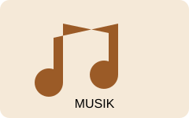
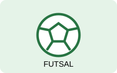
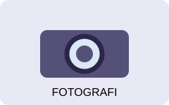
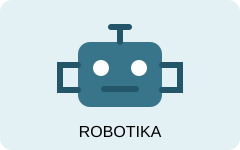

UKM Musik

Wadah bagi mahasiswa yang tertarik pada musik, vokal, dan bermain alat musik.
- Bidang: Seni dan musik.
- Kegiatan: latihan rutin dan penampilan musik.
Kenali komunitas dan temukan kegiatan yang kamu sukai.
Berikut adalah contoh UKM untuk keperluan praktikum UKM MATCH.

Wadah bagi mahasiswa yang tertarik pada musik, vokal, dan bermain alat musik.

Komunitas bagi mahasiswa yang menyukai olahraga futsal dan kerja sama tim.

Tempat belajar fotografi, komposisi, dan dokumentasi kegiatan.

Komunitas untuk mahasiswa yang tertarik pada teknologi, elektronika, dan robot.